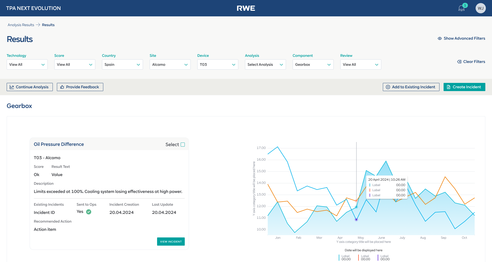

RWE’s performance analysts managed turbine and solar incidents across 4+ disconnected tools (Excel, email, SharePoint, SCADA exports) with no single source of truth. As the sole UI/UX designer, I designed the TPA Next Evolution portal — a unified incident management platform with a 3-step creation wizard with smart pre-fill, an AI-powered Virtual Analyst for natural language querying, and turbine-level analysis dashboards. Shipped 15+ production-ready screens over 10+ months, replacing a flat 15-field form with a guided workflow now in production. The same enterprise B2B complexity — multi-user workflows, cross-team alignment, system-level thinking — that drives products at Freshworks, Razorpay, or Postman.
The problem: incidents lost between spreadsheets, emails, and SharePoint
RWE manages thousands of wind turbines and solar assets across offshore and onshore sites in multiple countries. When a turbine or solar panel exhibits abnormal behaviour — a gearbox temperature spike, a power curve deviation, a blade pitch fault — performance analysts need to investigate, categorise the incident, and relay findings to operations stakeholders so corrective action can be taken.
The existing workflow was held together with duct tape. Analysts pulled data from SCADA and monitoring systems, documented findings in Excel spreadsheets, emailed incident reports to stakeholders, and tracked status updates in SharePoint. There was no single source of truth for incident status, no structured categorisation, and no way for stakeholders to see what was being investigated in real time. Incidents slipped through the cracks, duplicates were common, and the handoff from analyst to operations was slow and error-prone.
I was brought in as the sole UI/UX designer to help build the TPA Next Evolution portal — a purpose-built web application that would consolidate the entire incident lifecycle into one platform: from automated detection through analyst categorisation to stakeholder communication. The project also included a Virtual Analyst — an AI-powered chatbot built on Azure AI that lets analysts query data and generate reports using natural language.

Understanding the analyst’s daily reality
I started with requirement gathering sessions with the Product Owner, translating business objectives into well-defined PBIs for the development backlog. In parallel, I conducted user interviews with performance analysts and stakeholders to understand their actual workflows — how they investigated, what information they needed, and where the existing process broke down.
Three patterns surfaced across every conversation:
Disconnected tools in the workflow — SCADA data, Excel for documentation, email for handoff, SharePoint for tracking. No single source of truth.
Fields on the incident creation form — all visible at once, with no grouping, no guidance, and no data pre-filled from the analysis that triggered the incident
Every step of the process was manual — from categorisation to stakeholder notification. Analysts spent more time on administration than on actual analysis
How I structured the work
Requirement gathering & PBI refinement
Worked closely with the PO to define the scope across two product pillars: the Portal (incident management, analysis results, stakeholder communication) and the Virtual Analyst (AI-powered NLP querying). Broke each pillar into prioritised backlog items with clear acceptance criteria and front-end developer alignment.
User interviews & workflow mapping
Interviewed performance analysts and stakeholders to map the full incident lifecycle: detection → investigation → categorisation → documentation → handoff → resolution tracking. Identified that the biggest time sink wasn’t investigation — it was the administrative overhead of documenting and communicating findings through disconnected tools.
Design exploration & concept testing
Explored multiple approaches for the incident creation flow — the most critical workflow in the system. Tested a single-page form (the existing pattern), a two-panel layout, and a multi-step wizard with smart pre-fill. Ran usability tests on prototypes with analysts. The multi-step wizard with pre-filled data won decisively — users loved that context from the analysis carried forward automatically.
High-fidelity design & front-end steering
Built 15+ high-fidelity screens in Figma covering the analysis results dashboard, incident list, incident detail, creation wizard, Virtual Analyst chatbot, and component analysis views. Worked directly with front-end developers — not just handing off specs but steering implementation decisions around interaction patterns, component behaviour, and responsive states.
Iterative delivery & ongoing refinement
The portal shipped in phases over 10+ months. Each sprint included design QA, developer pairing, and feedback loops with the analyst team. The incident creation wizard — after testing and iteration — is now in production and actively used across the organisation.
Four decisions that shaped the product
Multi-step wizard with smart pre-fill — balancing automation and analyst control
This was the hardest design problem on the project. The old incident creation form had 15+ fields on a single page — all visible at once with no hierarchy, no grouping, and critically, no data carried forward from the analysis that triggered the incident.
The solution was a 3-step guided wizard: Device → Incident Details → Additional Details. Each step focused on one category of information, with a progress stepper at the top. The key innovation was the live Summary sidebar — as analysts filled in each field, the summary updated in real time, giving them a running view of the complete incident before submission.
The “semi-automatic” part was the smart pre-fill. When an analyst clicked “Create Incident” from an analysis result, the system pre-populated Device, Technology, Site, Component, and the relevant analysis data. Analysts could review and override any pre-filled field, keeping them in control while eliminating redundant data entry.
The conceptual reasoning: The balance between automation and manual control was critical: analysts needed to trust the data, not feel like the system was making decisions for them. During usability testing, this was the feature that got the strongest positive reaction. Analysts described it as “finally, the system remembers what I was just looking at.” The wizard is now in production.
Virtual Analyst — designing a conversational AI interface for domain experts
The Virtual Analyst was an AI-powered chatbot built on Azure AI that let analysts query incident data, generate reports, and analyse patterns using natural language. The design challenge wasn’t building a chat interface — it was designing one that domain experts would actually trust and use.
I designed a split-panel layout: a chat history sidebar on the left and the conversation panel on the right. Critically, I added a “Download Chat” feature and the ability to request SQL queries behind the responses — because analysts wanted to verify the AI’s answers against their own data sources. Transparency built trust.
The conceptual reasoning: Engineers and analysts are sceptical of AI tools that feel like toys. The interface needed to feel like a professional tool, not a consumer chatbot. Voice input was also included for hands-busy field scenarios. The interface balanced conversational ease with the data rigor that domain experts demand.
Analysis Results dashboard — turbine-level visibility at a glance
The Analysis Results page needed to answer a simple question: “Which turbines need attention right now?” The dashboard shows turbines as visual cards grouped by site, each with color-coded severity badges indicating the number and severity of active issues.
The conceptual reasoning: The card-based layout was a deliberate choice over a table. During interviews, analysts told me they mentally map turbines spatially — by site and physical location — not as rows in a spreadsheet. The card view mirrored their mental model: “I see Bartelsdorf A, I see turbine 821085 has a red badge, I click in.” From the card, they could drill into the component-level analysis view with embedded charts and one-click incident creation.
Structured incident detail with tabbed information architecture
Each incident accumulates a lot of context over its lifecycle: metadata, descriptions, proposed actions, SAP work orders, comments, change logs, performance plots, and watchers. Putting all of this on a single scrollable page would recreate the same overwhelm problem as the old form.
The conceptual reasoning: I structured the incident detail view with a tabbed layout: Incident Details, Comments, Change Log, Work Orders, and Watchers. The default tab showed the most critical information — so analysts could assess the situation without switching tabs. Secondary information lived one click away but never cluttered the primary view.
From flat form to guided wizard — the before and after
The old single-page form (15+ fields, no guidance) was replaced with a 3-step wizard with smart pre-fill and a live Summary sidebar. This flow is now in production.


Incident creation · Old flat form → 3-step wizard with smart pre-fill and live Summary → Success confirmation
The core interfaces
Four views that cover the primary workflows: analysis drill-down, incident detail, the AI chatbot, and the wizard with asset selection.



Core interfaces · Analysis drill-down, incident detail with tabs, Virtual Analyst chatbot, wizard asset selection
What shipped and what it changed
The TPA Next Evolution portal shipped in phases and is now actively used by the performance analysis team at RWE. The incident creation wizard — the centrepiece of the redesign — is in production and has replaced the old flat form entirely. The Virtual Analyst is providing analysts with a new way to query and generate insights from incident data using natural language.
High-fidelity screens designed — dashboard, analysis detail, incidents, creation wizard, Virtual Analyst, and component views
Tools consolidated — replaced Excel + email + SharePoint + SCADA exports with a single incident management platform
Guided wizard with smart pre-fill replaced a flat 15-field form — now in production, with strong positive user feedback
Virtual Analyst shipped — NLP-based querying and report generation built on Azure AI, integrated into the analyst workflow
What I’d do differently
The balance between automation and analyst control was the defining challenge of this project, and the lesson I took away is that trust has to be earned incrementally. The smart pre-fill feature was well received precisely because analysts could see and override every pre-filled field. Early in the design process, I explored a version where the system auto-submitted low-severity incidents without analyst review — the team rejected it immediately. Analysts need to feel that they are the decision-makers, with the system supporting them, not replacing them. That principle shaped every automation decision after.
The Virtual Analyst also taught me that designing AI interfaces for domain experts is fundamentally different from designing consumer chatbots. The “Download Chat” and “show SQL” features were not in my original design — they came from usability testing when analysts said they wouldn’t trust answers they couldn’t verify. Transparency features that might seem like edge cases in a consumer product are table stakes in enterprise AI tools.
Front-end developer steering was another key learning. On this project, I didn’t just hand off specs — I worked directly with developers on interaction details, component behaviour, and edge cases. This reduced the gap between design intent and implementation significantly, and I’d advocate for this working model on any future project. The designer’s job doesn’t end at the Figma file.
Why this translates to Indian B2B SaaS: The core problems I solved here — designing AI-augmented enterprise tools, multi-step wizard flows for complex data entry, and building systems that balance automation with user control — are the same challenges facing product teams at Freshworks, Postman, Chargebee, and similar companies. I’m looking to bring this enterprise complexity experience to the Indian SaaS ecosystem.